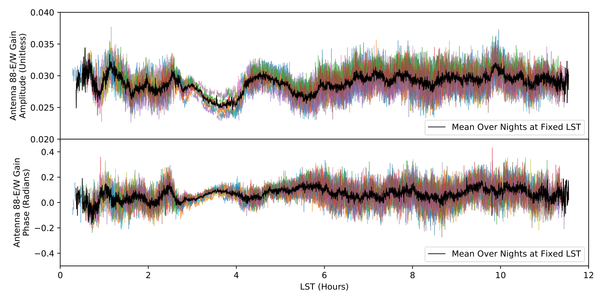

Hi! I'm Max Lee
I am a graduating astrophysics and physics double major at the UC Berkeley and am broadly interested in cosmology. Of particular interest is, understanding what model best describes the universes evolution and what parameters describe that model! This interest has led me to work with Dr. Vanessa Boehm and the Berkeley Center for Cosmological Physics by building a differentiable weak gravitational lensing simulation
MADLens, which will be discussed in an upcoming paper.
On the experimental side, I work with the Hydrogen Epoch of Reionization Array (HERA) which is a 21-cm experiment searching for information about the first energy emitting sources to form in the universe. Together with Dr. Josh Dillon and Prof. Aaron Parsons I have been analyzing the effectivity of HERA's redundant-baseline calibration scheme, and have helped diagnose and mitigate issues that have arrised. It
has been exciting to take part in a team effort working at the frontlines of cosmology experimentation, and to analyze data strainght from the telescope!
Current Projects
MADLens
 For the past year, I have been collaborating with Dr. Vanessa Boehm and Dr. Yu Feng at the Berkeley Center for Cosmological Physics in developing a weak gravitational lensing simulation that is fully differentiable with respect to cosmological parameters and initial density modes. This is an incredibly exciting project that
allows for cosmological parameter estimates from upcoming surveys like Euclid
and LSST. With stage IV surveys comes unprecedented numbers of measurements and accuracy in measurements. This means cosmologists must develop models that can match this accuracy if we want to fully utilize the information content. This has been a notorious problem for weak gravitational lensing by cosmic shear. In general, cosmic shear measures the correlation between distortions of galaxies due to gravitational deflections. With these correlations one can extract the
projected matter density field along a line of sight, which is almost magical, but for this analysis to be practical general approximation are made. The most notorious is that the cosmic shear field can be considered gaussian, and fully described by its power spectrum and two point correlation functions. This is not the case, Just look at the convergence map to the left! This is an output simulated by MADLens, theres clearly non-gaussian structure (see the clustinring areas,
the nulls and voids). There has been work to incorperate higher order statistics such as the angular bispectrum, trispectrum, etc. Alternative methods to extract information has
arisen, and there are promising results using peak counts, peak nulls, minkowski functionals, at infinitum, but all of them lack consideration of the full, non-gaussian field.
For the past year, I have been collaborating with Dr. Vanessa Boehm and Dr. Yu Feng at the Berkeley Center for Cosmological Physics in developing a weak gravitational lensing simulation that is fully differentiable with respect to cosmological parameters and initial density modes. This is an incredibly exciting project that
allows for cosmological parameter estimates from upcoming surveys like Euclid
and LSST. With stage IV surveys comes unprecedented numbers of measurements and accuracy in measurements. This means cosmologists must develop models that can match this accuracy if we want to fully utilize the information content. This has been a notorious problem for weak gravitational lensing by cosmic shear. In general, cosmic shear measures the correlation between distortions of galaxies due to gravitational deflections. With these correlations one can extract the
projected matter density field along a line of sight, which is almost magical, but for this analysis to be practical general approximation are made. The most notorious is that the cosmic shear field can be considered gaussian, and fully described by its power spectrum and two point correlation functions. This is not the case, Just look at the convergence map to the left! This is an output simulated by MADLens, theres clearly non-gaussian structure (see the clustinring areas,
the nulls and voids). There has been work to incorperate higher order statistics such as the angular bispectrum, trispectrum, etc. Alternative methods to extract information has
arisen, and there are promising results using peak counts, peak nulls, minkowski functionals, at infinitum, but all of them lack consideration of the full, non-gaussian field.
MADLens bridges this gap by accurately simulating the full cosmic shear field using a highly parallelized Nbody simulation code fastPM, incorperating small scale baryonic effects using a parameterization (Potential Gradient Descent) which has been trained on high resolution hydrodynamical simulations, using an interpolation method to sharpen the accuracy between simulation steps, and on top of all of that... It is written in an automated differentiation architecture allowing for the derivative of the entire simulation. The end goal is to use the gradient of the simulation in tandem with gradient based optimization methods (such as Hamiltonian Mone Carlo Methods, or Maximum A Posteriori estimates) on stage four survey data to find accurate cosmological parameter estimates. I have recently submitted an application for the NSF Graduate Research Fellowship Program proposing to use MADLens for parameter estimation which you are welcome to read about here!
HERA

I Have been working for the past two years with the Hydrogen Epoch of Reionization Array which is a raio interferometer working to observe 21-cm emissions from the early universe. Specifically, The experiment is searching for traces of the first stars, galaxies, blackholes, everything we know to exist in our universe! I work with Dr. Josh Dillon and Prof. Aaron Parsons on foreground mitigation, and calibration debugging. One of the toughest parts of EoR experiments is reducing all of the foregrounds. In fact these foregrounds are often upto five orders of magnitude brighter than the EoR signal to begin with meaning the experiment is literally trying to find a needle in a haystack. Luckily methods of calibration have been developed to account (or try to) for this, and HERA uses a Redundant-Baseline Calibration scheme which leverages properties of interferometers when they are equidistant, or redundant. In practice creating perfectly redundant baselines is near impossible, and I have spent a great deal of time investigating the effect of non-redundancy in redundant baselines. Specifically I have looked at the structure in calibration solutions as a function of time and found that the non-redundancy tied together with bright radio sources (like Fornax-A) cause time locked variations, which negatively impacts the calibration process. We were able to show this, and find a smoothing timescale that works to mitigate this effect in this publication. We have most recently been working on the development and analysis of fringe-rate filters, which are fourier space filters that act in the time domain, to effectively shape the beam profile and smooth the structure of calibrations.
Miscellaneous Physics
The Galaxy is... Warped?

The universe is filled with mostly hydrogen, and out own galaxy is no exception. Throughout the Milky Way are regions of neutral hydrogen clustering together due to their gravitational interactions. Where there is neutral hydrogen, there is the chance of 21-cm hydrogen emissions where the spin allignment of the proton and electron switch from alligned to anti-aligned, releasing a 21-cm wavelength. Radio Astronomy allows for the detection of these long wavelengths! In a Radio Astronomy Lab under the guidance of Aaron Parsons, I used the Leuschner Radio Telescope to map the H1 emissions from the plane of the milky way, slightly above, slightly below, and all the way around. With these Observations, I was able to use the doppler shifts in their wavelengths to determine the distance, temperature, veloity, and column density of the clouds. This let me make a map of the hydrogen clouds in our home galaxy and show that not only is there spiral structure to the Milky Way, but that there is an apparant warp! This is a known phenomenah, though astronomers still dont know why there is a warp. It is evident in other galaxys though, that a "Pringle" shape or "Fedora" shape emerges in spiral galaxies. In the plot on the left, you can see that when differencing measurements made above the galactic plane, and below the galactic plane, there is a clear "red" region at a range of galactic longitudes, while at others, there is a clear blue region! This is direct evidence that the Milky Way is shaped like a Fedora! or a Pringle! Yummy!
Chaos! It's Chaos I Tell You
For a class project, I investigated introductory non-linear dynamics and chaos theory. I found it to be fascinating, and found the geometric approach to understanding chaos to be perfect for me. I love to visualize things, and mess around with the buttons and see how it changes results. I gave a presentation to my professors on chaos theory, and developed a number of simulations of chaotic systems along the way. I brought some of the highlights here. First up is the duffing oscillator which models a spring, if the spring doesnt strictly obey Hookes law. It's pretty much a nonlinear spring. The system is a great example and introduction into Strange Attractors, where the trajectory in phase space is chaotic, but the system tends to move chaoticly on some surface... Well, if you take a slice of the systems trajectory and then take another slice right next to it, and another, and etc... you get a series of Poincare plots. When Animated, they become a pretty picture!
This Poincare section (or multiple sections) are rich in information content and description. One of the cooler aspects is that they are Fractals! If we zoom in on a portion of the Poincare section we find that there is an infinit number of line that never cross. We can keep zooming in and in and in and we will always find infinite non crossing lines. Though... We cant simulate that much infinity, so the scatter will have to do.
How Big is the Sun, Really?

One of the "wait but how?" moments in my life was thinking about the size of the sun. How do we know the radius, mass, properties in general? In my introductory astronomy class this bugged me alot. I had not learned about how observations work or how these quantities are discovered. I had the opportunity two years later to use a radio interferometer at UC Berkeley to precisely measure the radius of the sun and answer this question once and for all. With a group of budding radio astronomers, we used a two dish radio interferometer to track the motion of the sun through out a full day. Interferometers work because of a geometric delay between light travel distance, and with knowledge of this distance difference and properties of electromagnetic waves, we were able to extract the the solar radius from our observations! In the plot to the right we show the real data of the suns motion through out a day, and a fitted curve which envelopes this motion. Through this fitting process we found the parameter to describe the envelope and it turns out to be exactly the solar radius. I was finally able to answer the questions from my past. In fact our value turned out to be incredibly competitive with the most recent and accurate measurements of the solar radius! Interferometry in general is great at measuring distances and one cool thing I learned through this project, is that interferometry is often the method used to calculate the continental drifts.
Publications & Other Writing
- V. Bohm, Y. Feng, M. Lee, B. Dai MADLens: Package for Fast and Differentiable Non-Gaussian Lensing Simulations. In Prep
- J.S. Dillon, M. Lee, A.R. Parsons, et al. Redundant-Baseline Calibration of the Hydrogen Epoch of Reioniztion Array. Published MNRS 11-02-2020: arXiv:2003.08399
- 1M. Lee and J.S. Dillon,Memo #72: Explaining and Mitigating the Temporal Structure of Calibration Solutions, 09-2019
- 2M. Lee, J.S. Dillon, A.R. ParsonsExplaining the Temporal Structure in HERA's Redundant Calibration Solutions Astronomy Poster Summer Intern Symposium, Berkeley, CA, 8-2019
2 [Poster]